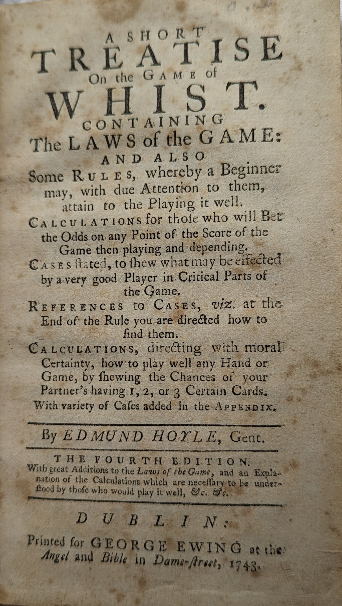

A Descriptive Bibliography of Edmond Hoyle
Copyright © 2014-26 by David Levy
(page updated 2023-11-27)User Guide
Whist.D.1
A Short Treatise on the Game of Whist, printed for George Ewing, first Ewing edition, “fourth” edition, 1743.
 |
Title: | A SHORT | TREATISE | On the Game of | WHIST. | CONTAINING | The LAWS of the GAME: | AND ALSO | Some Rules, whereby a Beginner | may, with due Attention to them, | attain to the Playing it well. | Calculations for thoſe who will Bet | the Odds on any Point of the Score of the | Game then playing and depending. | Cases ſtated, to ſhew what may be effected | by a very good Player in Critical Parts of | the Game. | References to Cases, viz. at the | End of the Rule you are directed how to | find them. | Calculations, directing with moral | Certainty, how to play well any Hand or | Game, by ſhewing the Chances of your | Partner’s having 1, 2, or 3 Certain Cards. | With variety of Caſes added in the Appendix. | [rule] | By EDMUND HOYLE, Gent. | [rule] | THE FOURTH EDITION. | With great Additions to the Laws of the Game, and an Expla-|nation of the Calculations which are neceſſary to be under-|ſtood by thoſe who would play it well, &c. &c. | [rule] | DUBLIN: | Printed for GEORGE EWING at the | Angel and Bible in Dame-ſtreet, 1743. |
| Collation: | 12o: [A]2 B–C12 D10 [$1–5 signed]; 36 leaves, pp. [4 ] 1–67 [68] |
| Contents: | Signature (Page) Reference | Contents | Signature (Page) Reference | Running Titles |
| A1r | title | |||
| A1v | blank | |||
| A2r–A2v | ‘[reverse oxford rule] | THE | CONTENTS. | [...]’ | A2v | ‘CONTENTS.’ | |
| B1r–D10r (1–67) | ‘[row of type orn] | A SHORT | TREATISE | On the Game of | WHIST. | [...]’ | |||
| D10v (68) | blank |
| Catchwords: | A2r Chap. [rections]; B12r(23) Particular [CHAP.]; D4r(55) In [II. In] |
| Publisher: | George Ewing |
| Notices: | 1743-04-02 Dublin Gazette: “This day is published...price 6d ½” |
| Notices: | 1743-03 The London Magazine: In a section called “The Monthly Chronologer for Ireland.” (Google) |
| Price: | 6½d. (advertisement, notice) |
| References: | ESTC N24789, Rather 11 |
| Copies Seen: | O [Jessel f.540]; CSmH [371549]; Levy [1581] |
| Other Copies: | Lll [uncat]; CtY-BR [GV1277.H89 1743]; LU [GV1243.H7] |
| Notes: | The text is taken from Whist.3, the third London edition. Ewing followed a practice of incrementing the London edition by one to create a "fourth" edition. |